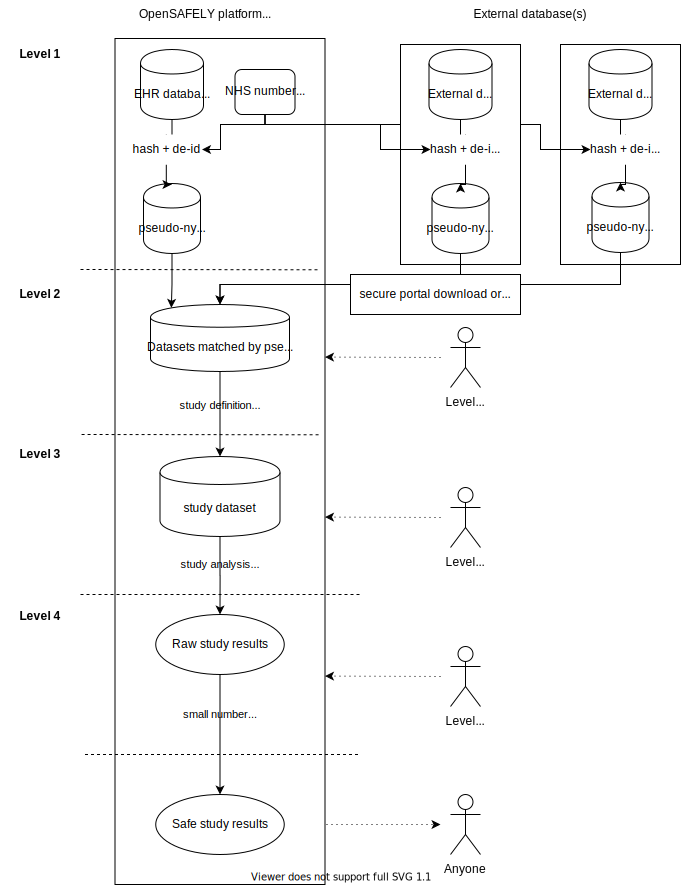

Security
The OpenSAFELY platform is highly secure. The data available follows a tiered structure of data of four different levels, each of which is permissioned separately. Each stage is generated from the preceding stage — at each step, data privacy is increased through the removal of potentially identifiable data.
Level 1🔗
This is the most restrictive level and includes the complete, raw, fully-identifiable, event-level patient data. EHR vendor data engineers store data at an identifiable level as part of their business-as-usual; they are instructed to process this data by the GPs (who are in routine practice the data controllers) in order to manage and store this information. No-one outside the EHR vendor has any access to this data.
Where is this data held?🔗
Data is held within the EHR vendor's secure environment.
Who has access?🔗
Only data processor staff working for the EHR vendor have access at this level (as well as GP clinical staff who can access the data for the purposes of direct patient care). No additional access was granted to members of the OpenSAFELY collaborative to access data at this level.
Example🔗
| NHS number | Name | DoB | Event | Date | Practice |
|---|---|---|---|---|---|
| 979384758 | Seb Colbert | 12/3/1971 | 2 month prescription of Glaberol 2mg twice a day. | 30/3/2020 10:31 | Parkway Practice, Birmingham, B1 2JP |
| 979384758 | Seb Colbert | 12/3/1971 | Diagnosis asthma | 2/12/2012 11:22 | Grove Practice, London, SE5 8AZ |
This example demonstrates the level of detail available in level 1 data. It is not representative of how the data is structured.
Level 2🔗
This level includes pseudonymised versions of the coded event-level data produced every week by the EHR vendor for the vendor-OpenSAFELY database. It also includes external datasets imported into the database, for instance hospital admissions and death registry data. Only data for patients who are present in the EHR database are imported from external datasets. The schema for this database can be seen in this notebook (currently accessible only to OpenSAFELY users).
Where is this data held?🔗
Data is held within the EHR vendor's secure environment on the OpenSAFELY server.
Who has access?🔗
Researchers who hold honorary contracts with NHS England and have signed Data Access Agreements for level 2 or level 3 have access. This includes OpenSAFELY software developers and some researchers.
Example🔗
| Pseudonym | Event | Date | Location |
|---|---|---|---|
| aj834nasdlk | 2 month prescription of Glaberol 2mg twice a day. | 30/3/2020 10:31 | MSOA (approximate location) |
| aj834nasdlk | Urea result 7.1 mmol/L | 2/03/2020 09:22 | MSOA |
| aj834nasdlk | Urea result 8.2 mmol/L | 2/02/2020 10:41 | MSOA |
| aj834nasdlk | Diagnosis asthma | 2/12/2012 11:22 | MSOA |
This example demonstrates the level of detail available in level 2 data. It is not representative of how the data is structured.
Level 3🔗
This level includes analysis-ready extracts of Level 2 data for specific analyses. I.e., anything that is generated by a study definition.
Where is this data held?🔗
Data is held within the EHR vendor's secure environment on the OpenSAFELY server (same as level 2).
Who has access?🔗
Currently, anyone with Level 2 access.
Level 4🔗
This level includes tables, figures, and other structured files produced as a result of the analysis of the Level 3 data, for example summary statistics and statistical models. Following scrict disclosivity checks and redactions, files can be released out of the server to the remote git repository on GitHub for further processing and public consumption.
Where is this data held?🔗
Data is held within the EHR vendor's secure environment on a specific server, separate from the Level 2 and 3 server.
Who has access?🔗
Anyone with Level 2/3 access. In addition, researchers who hold honorary contracts with NHS England and have signed Data Access Agreements relevant to level 4 access (who do not have level 2/3 access) for the purposes of checking and redacting data prior to release.
Unrestricted data🔗
Any level 4 files that have undergone strict disclosivity checks and redaction, and therefore considered to have negligible disclosure risk, can be released. Files are released by committing them to the remote git repository on GitHub.
Diagram🔗
